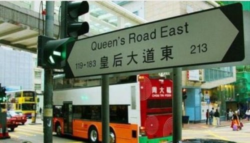
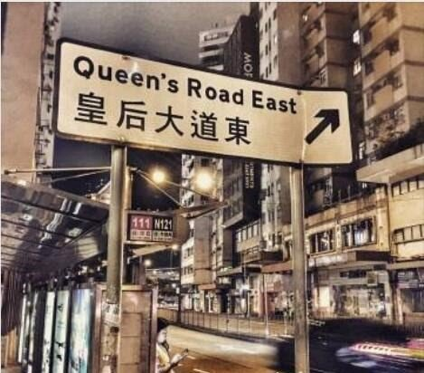
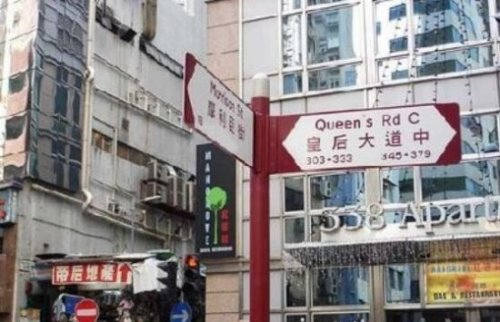

皇后大道东其实是香港的一个地名，是香港开埠之后新建的第一条大马路，所以这条马路对香港地区人民来说具有非同一般的意义，
大家都知道在香港回归之前，是由英国主管的，所以这条马路是由英国女王所命名的，英国是女皇大道，但是被国人翻译成了皇后大道。

后来虽然知道道路名称被翻译错了，但是人们已经用成了习惯，就没有再改回来了，
继续沿用了皇后大道这个名字，这条大道的西边叫做皇后大道西，这条道路的东边被称为皇后大道东，皇后大道是香港地区被英国殖民统治的标志特征。

而皇后大道东这首歌也是在那个时候写的，那个时候香港地区刚刚回到祖国的怀抱，
而皇后大道这首歌在当时也主要是为了讽刺香港回归祖国怀抱时候的真实写照，
因为那个时候香港地区的人民对大陆政府一点都不信任，对香港地区未来的发展持怀疑态度。
所以那个时候香港地区的政策特别的不稳定，很多人都因此移民了，
但是英国政府在离开香港地区的时候也并没有对香港地区搞破坏，大陆政府也履行了自己的约定，
对香港地区没有过多的制约，所以那个时候的香港地区的特别不安稳的。

而这首歌就是在那样的环境下创作出来的，那么皇东大道东为什么禁播呢？
原因就是因为这首歌曲是在讽刺香港主权移之前香港的现状，代表着罗大佑先生个人对香港地区回归祖国的看法，
这种看法在现在看来是非常不成熟的，所以这首歌才会被禁。
点我查看歌词
皇后大道西又皇后大道东 皇后大道东转皇后大道中 皇后大道东上为何无皇宫 皇后大道中人民如潮涌 有个贵族朋友在硬币背后 青春不变名字叫做皇后 每次买卖随我到处去奔走 面上没有表情却汇聚成就 知己一声拜拜远去这都市 要靠伟大同志搞搞新意思 照买照卖楼花处处有单位 但是旺角可能要换换名字 皇后大道西又皇后大道东 皇后大道东转皇后大道中 皇后大道东上为何无皇宫 皇后大道中人民如潮涌 这个正义朋友面善又友善 因此批准马匹一周跑两天 百姓也自然要斗快过终点 若做大国公民只须身有钱 知己一声拜拜远去这都市 要靠伟大同志搞搞新意思 冷暖气候同样影响这都市 但是换季可能靠特异人士 空即是色 色即是空 空即是色即是色即是空 空即是色 色即是空 空即是色即是色即是空 空即是色 色即是空 空即是色即是色即是空 空即是色 色即是空 空即是色即是色即是空 皇后大道西又皇后大道东 皇后大道东转皇后大道中 皇后大道东上为何无皇宫 皇后大道中人民如潮涌 这个漂亮朋友道别亦漂亮 夜夜电视荧幕继续旧形象 到了那日同庆个个要鼓掌 硬币上那尊容变烈士铜像 知己一声拜拜远去这都市 要靠伟大同志搞搞新意思 会有铁路城巴也会有的士 但是路线可能要问问何事 皇后大道西又皇后大道东 皇后大道东转皇后大道中 皇后大道东上为何无皇宫 皇后大道中人民如潮涌 皇后大道西又皇后大道东 皇后大道东转皇后大道中 皇后大道东上为何无皇宫 皇后大道中人民如潮涌